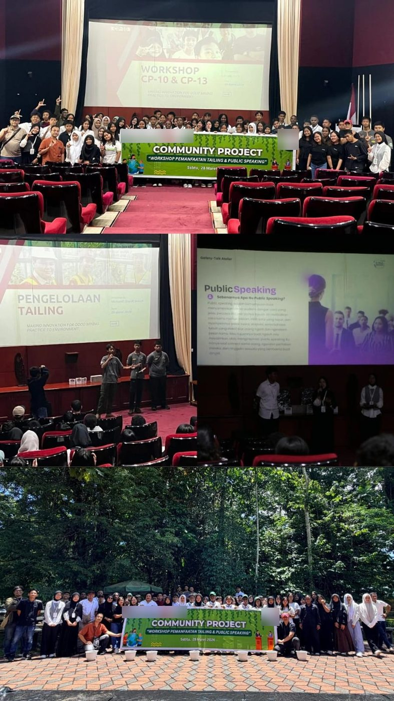
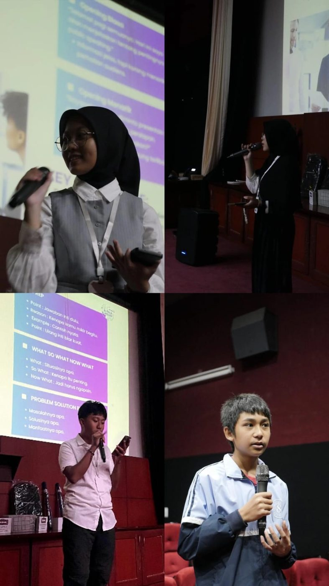

Ganti foto di siniproyek1-a.jpg
Ganti foto di siniproyek1-b.jpgProyek 01 · Kolaborasi CP 10
Workshop Tailing x Public Speaking
Proyek kolaboratif interaktif yang menggabungkan edukasi pengolahan limbah pertambangan (tailing) dengan pelatihan komunikasi publik. Bersama kelompok CP 10, workshop ini memberikan penjelasan dan sosialisasi praktis bahwa tailing dapat dimanfaatkan secara produktif menjadi bahan pembuatan pupuk tanaman maupun paving block. Kegiatan ini juga dilengkapi lokakarya terpadu untuk meningkatkan kepercayaan diri serta kemampuan komunikasi generasi muda.
Peran sayaBertindak aktif dalam penyampaian materi public speaking dan menjadi panitia pelaksanaan sesi sosialisasi edukatif pemanfaatan tailing.